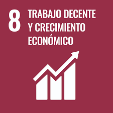

Proyecto nº1

El primer proyecto que he elaborado durante mi estancia en este módulo ha sido la creación de una aplicación para una ODS.
En mi caso me ha tocado la ODS nº8, es decir, El Trabajo Decente y Economia
Ahora mismo estoy laborando el modelo conceptual y lógico, junto a diversos casos de uso de la aplicación.